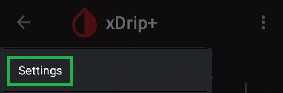

Maintenance operations
Update xDrip+
You can easily upgrade (more recent) or downgrade (older) your xDrip+ version simply by installing another version on top of the current one. This means you don't need to uninstall the current version, hence avoid losing all data and settings.
There are two methods to update xDrip+, you can do it either manually or set the app to inform you an update is available and let it handle the download.
Manual update
Follow the install guidelines.
Automated update
You can set xDrip+ to inform you when an update is available and decide on which type of update you want.
Menu / Settings / xDrip+ Update Settings


First select the update type you're interested in with Update channel
Stable versions, known as releases are rarely refreshed and will not include latest developments. If your system is stable and you don't need new features, keep a released version.
Beta versions are rarely built and might address some more recent issues.
If you need to update you most probably want to select Alpha.
Once selected, turn on the Automatic update check.
Note: If you selected Alpha, a new option will be available in
Update channel:Nightly. You can select this option to have automatic download of the automatic nightly builds. This is not recommended. Use a nightly build only if you need a specific feature or experience issues that are currently been worked on.
If an update is available it should start downloading now.
If the update doesn't start, go back to the main xDrip+ display and select the upper right 3 dots menu.
Select Check for updated version.
If an update is available the following screen should show. Select DOWNLOAD NOW.
If download fails, try de-selecting Use internal downloader and retry.
Once download completes, xDrip+ will run the installer.
xDrip+ now updated, check your version if you want to be sure.
Reinstall xDrip+
This shouldn't usually be necessary but you might need to uninstall xDrip+ to troubleshoot, or if you need to change it to or from a private version.. For this, follow this sequence: backup, uninstall the xDrip+ app (the same way you'd remove any app from your phone), install and then restore.
Once complete check all your settings and recreate your alarms.
Backup
Backup settings
Menu / Settings / Load/Save setting to SDcard
You also can access it from the 3 dots menu:
Select Import Export features.
Select Load/Save setting to SDcard
Select SAVE ALL SETTINGS TO SDCARD
Your settings will be saved in /storage/emulated/0/Download/xDrip-Export
You need to authorize xDrip+ to access your phone memory.
Existing backup will be overwritten.
If you want to keep a safe copy, send the file to yourself by email, save in on a cloud drive or copy it via USB to a computer.
Backup the database
The database contains all BG readings, treatments and notes. It is strongly recommended that you backup your database and keep a copy on another device if you want to keep your existing data and as a safety precaution against a phone loss, crash, ...
Using upload to Nightscout is also strongly recommended.
From the main xDrip+ display select the upper right 3 dots menu.
Select Import Export features.
Select Export database.
The current database will be saved in /storage/emulated/0/xDrip
You need to authorize xDrip+ to access your phone memory.
You can make as many backups as your memory can store.

Your backup will be named exportYYYYMMDD-HHMMSS.zip with YYYY current year, MM month, DD day, and HHMMSS for hour minutes and seconds. This will allow you to have multiple backups identified by a unique timestamp.
If you want to keep a safe copy, send the file to yourself by email, save in on a cloud drive or copy it via USB to a computer.
Restore
Restore settings
When xDrip+ install is complete, if a backup is available, xDrip+ will propose to restore it automatically.
Select RESTORE SETTINGS
If you don't see this message, restore it manually.
Menu / Settings / Load/Save setting to SDcard
You also can access it from the 3 dots menu:
Select Import Export features.
Select Load/Save setting to SDcard
Select LOAD ALL SETTINGS FROM SDCARD
Restore a database
When xDrip+ install is complete, if a database backup is available, xDrip+ will propose to restore it automatically.

Make sure this is the database you want to restore then select RESTORE
Note: the current database will be exported first, for safety, you will find it in the list named b4import and the date/time the import was done. This will allow you to recover it if necessary.
If you want to restore a specific backup, from the main xDrip+ display select the upper right 3 dots menu.
Select Import Export features.
Select Import database.
Instructions are displayed. You don't need to move the backup file if you didn't move it from another device, you don't need to unzip it. Be cautious on restoring a database with a different xDrip+ version: it is recommended that you install the xDrip+ version that was used to perform the export before importing, then you can update xDrip+.
Select the database you want to import, look at the date and size (use the phone file browser) to be sure to pick the right one.
Once sure you're trying to restore the correct backup, Ok
If you restored the wrong database, just redo the same steps and select the latest b4import version to roll back.
New phone migration
Perform the following operations:
On the old phone:
- Backup settings and database
- Send yourself both settings and database backups, or copy them to a computer.
On the new phone:
- Install the same version of xDrip+ you are using on the old phone.
- Backup settings and database this is only needed to create the correct folders.
- Copy the files you sent yourself via mail, or from a computer to the right folders.
- Restore settings and database.